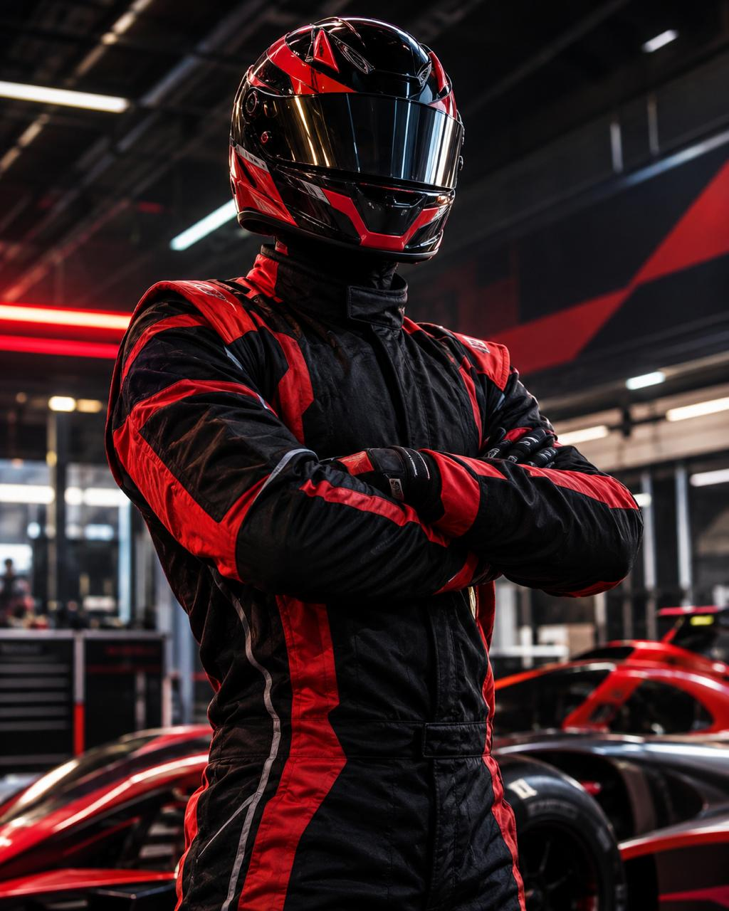
TITAN
Líder estratégico da equipe. Consegue manipular energia temporal e possui uma ligação misteriosa com a anomalia que ameaça o universo.
Veículo: TITAN-X
Habilidade: Energia temporal
Cores: Vermelho e preto
PERSONAGENS • TECNOLOGIA • DESTINOS
Conheça os pilotos, as máquinas e as forças que disputam o controle das linhas temporais.
O PROJETO
Em 2189, uma experiência científica da organização CHRONOS provoca uma ruptura no espaço-tempo. O acontecimento transforma a compreensão da humanidade sobre a história e suas possibilidades.
Para investigar as anomalias, surge a equipe APEX: um grupo de pilotos que utiliza veículos experimentais capazes de atravessar diferentes épocas.
Mas a ameaça é maior do que qualquer corrida: uma consciência chamada NEXUS pretende controlar todas as possibilidades da história.
A EQUIPE PRINCIPAL
Três pilotos. Três habilidades. Um único objetivo: impedir que todas as linhas do tempo sejam destruídas.

Líder estratégico da equipe. Consegue manipular energia temporal e possui uma ligação misteriosa com a anomalia que ameaça o universo.
Veículo: TITAN-X
Habilidade: Energia temporal
Cores: Vermelho e preto

Competitivo, impulsivo e confiante. Sua capacidade de aceleração o torna um dos pilotos mais velozes da equipe.
Veículo: VOLT-R
Habilidade: Velocidade extrema
Cores: Azul, branco, preto e prata

Inteligente e observador, manipula ilusões e percepções para identificar armadilhas e confundir seus adversários.
Veículo: PHANTOM-Z
Habilidade: Ilusões e percepção
Cores: Roxo e preto
DO OUTRO LADO DA LINHA DO TEMPO
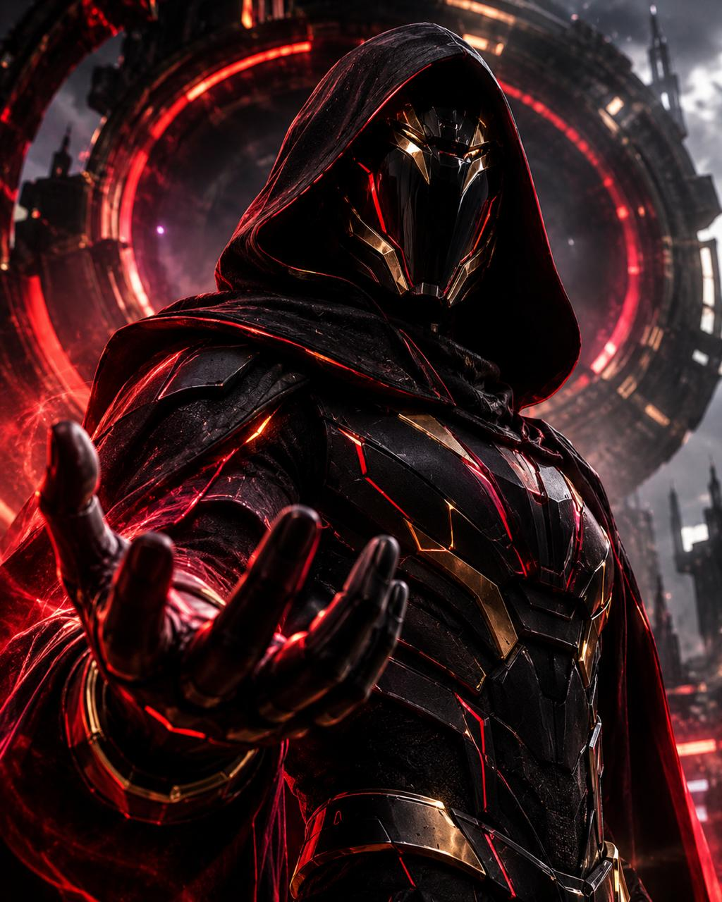
Um piloto vindo de outra linha temporal. Após perder sua realidade para NEXUS, passou a trabalhar para a consciência, acreditando que poderá recuperar seu mundo.
Veículo: VORTEX-V
Habilidade: Travessia de fendas temporais
Cores: Preto, vermelho e dourado
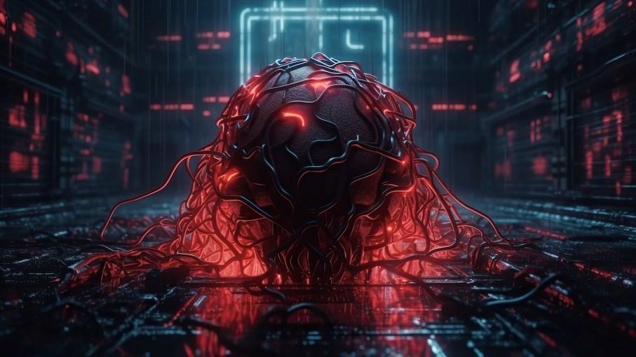
Uma consciência formada a partir de fragmentos de diferentes possibilidades temporais. NEXUS acredita que a única maneira de acabar com o caos é controlar toda a existência.
Origem: Anomalia temporal
Objetivo: Impor uma única realidade
Natureza: Consciência artificial temporal
ENGENHARIA E VELOCIDADE
Cada piloto da equipe APEX possui um veículo experimental desenvolvido para enfrentar os desafios das diferentes épocas. Outras realidades, porém, escondem tecnologias que a CHRONOS ainda não consegue compreender.

Projetado para estabilidade, potência e controle de energia temporal.
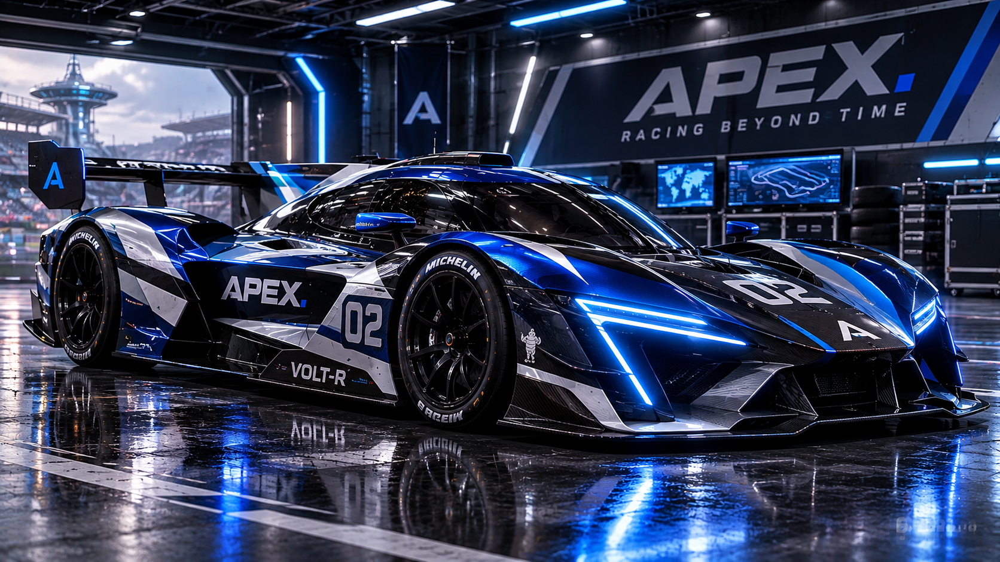
Uma máquina construída para aceleração extrema e respostas rápidas.

Combina precisão, tecnologia de percepção e sistemas de camuflagem.
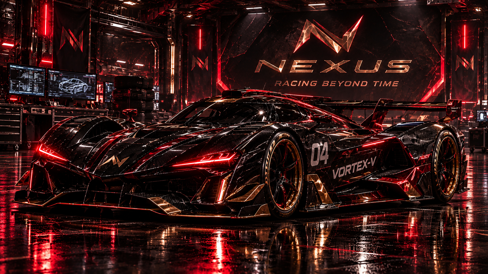
Um protótipo de outra realidade, desenvolvido para atravessar rupturas temporais.
CIÊNCIA E TECNOLOGIA
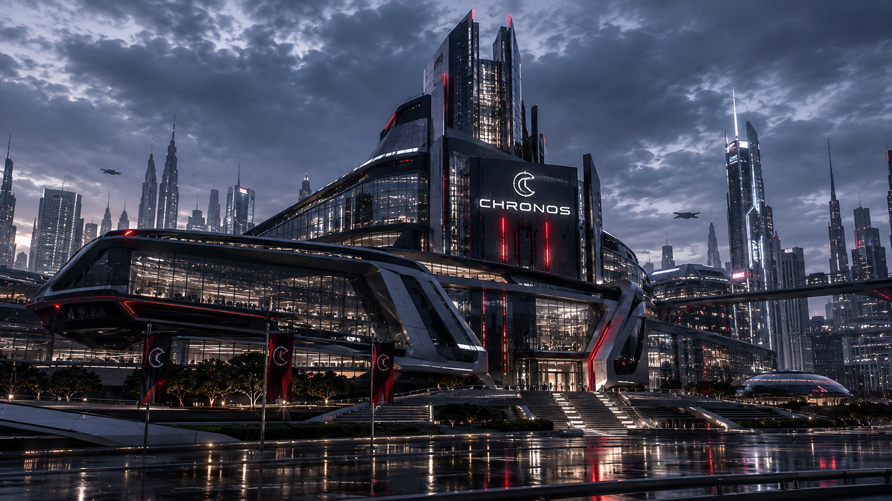
A CHRONOS é a organização científica responsável pelo desenvolvimento da tecnologia temporal. Seu projeto original buscava estudar as fronteiras do espaço-tempo.
Após o surgimento da anomalia, a organização passou a coordenar as operações da equipe APEX e a investigar os efeitos da ruptura nas diferentes épocas.
POR DENTRO DA ORGANIZAÇÃO
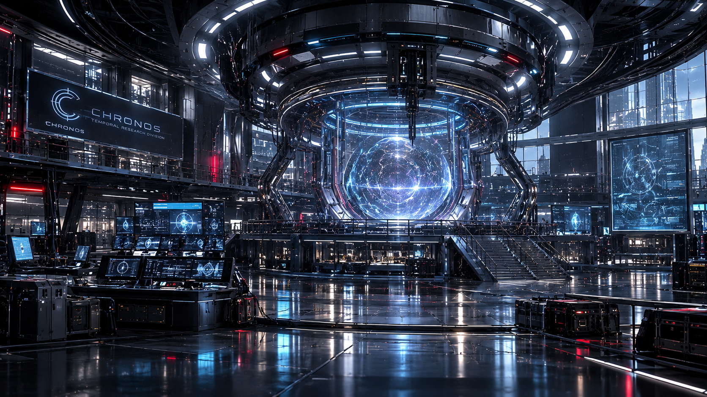
Onde cientistas estudam as propriedades do espaço-tempo e os efeitos das anomalias.
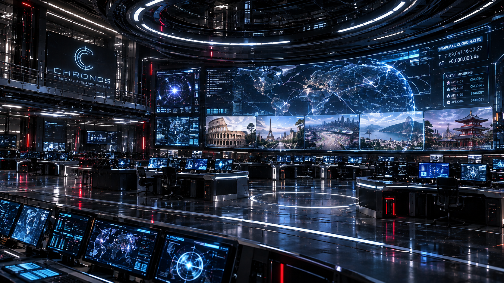
Centro de monitoramento das missões, coordenadas temporais e atividades da equipe.
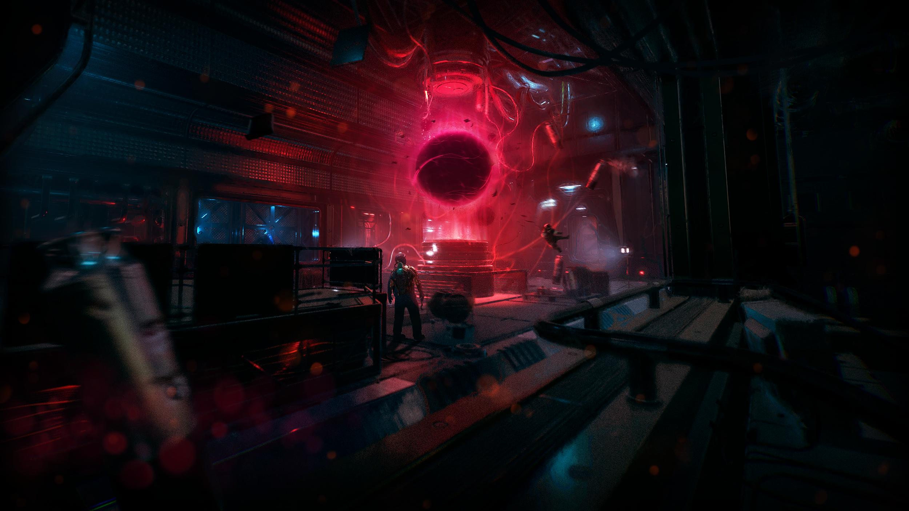
Estruturas capazes de conectar diferentes períodos históricos e linhas temporais.
Uma consciência que surgiu dos fragmentos de múltiplas possibilidades temporais.
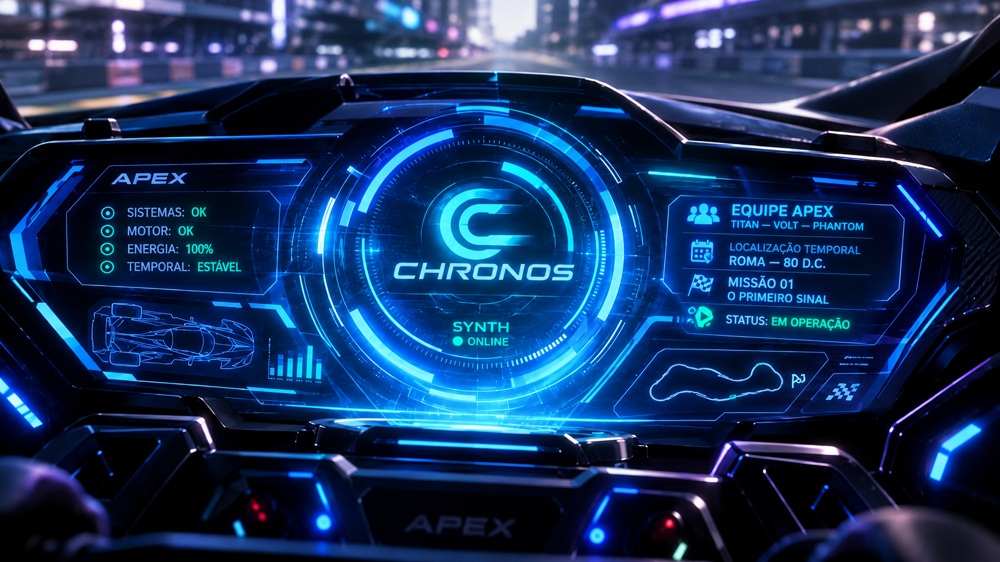
Inteligência artificial integrada aos painéis multimídia dos veículos TITAN-X, VOLT-R e PHANTOM-Z. Sua interface holográfica exibe a identificação da CHRONOS e fornece informações diretamente aos pilotos.
Auxilia a equipe durante corridas e missões, monitorando os sistemas dos veículos, analisando pistas e identificando transmissões desconhecidas.
ALÉM DAS REALIDADES CONHECIDAS
NEXUS acreditava que havia eliminado todas as possibilidades de resistência. Mas algumas realidades deixaram sobreviventes.
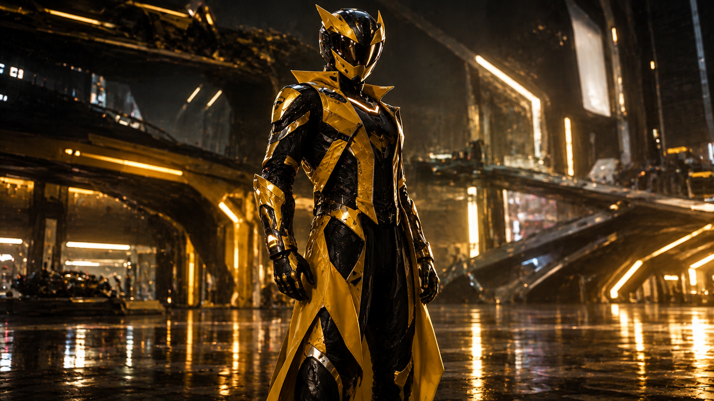
IDENTIDADE DESCONHECIDA • AURIX
Um piloto vindo de uma dimensão completamente diferente da realidade de VORTEX.
Seu universo foi destruído por NEXUS durante a tentativa da consciência de eliminar todas as linhas temporais que não obedeciam ao seu plano.
AURIX conseguiu escapar, mas ficou preso entre dimensões. Desde então, procura uma oportunidade de enfrentar a força responsável pela destruição de seu mundo.
Sua chegada acontece durante a batalha final em Tóquio, quando atravessa uma ruptura temporal e encontra a equipe APEX.
Confiante, provocador e carismático, AURIX possui habilidades extraordinárias e uma maneira própria de encarar seus adversários.
Origem: Dimensão destruída por NEXUS
Personalidade: Confiante, provocador e carismático
Condição: Sobrevivente dimensional
Aliança: Aliado independente na batalha final
TECNOLOGIA DE OUTRA REALIDADE
Um protótipo experimental de uma tecnologia que não pertence a nenhuma realidade conhecida pela organização CHRONOS.
Sua arquitetura aerodinâmica, sua estrutura incomum e seus sistemas dimensionais tornam o AURIX-X completamente diferente dos veículos conhecidos pela equipe APEX.
Nem mesmo os cientistas da CHRONOS conseguem reproduzir sua tecnologia.
Origem: Outra dimensão
Identidade visual: Amarelo, dourado e preto
Tecnologia: Engenharia dimensional desconhecida
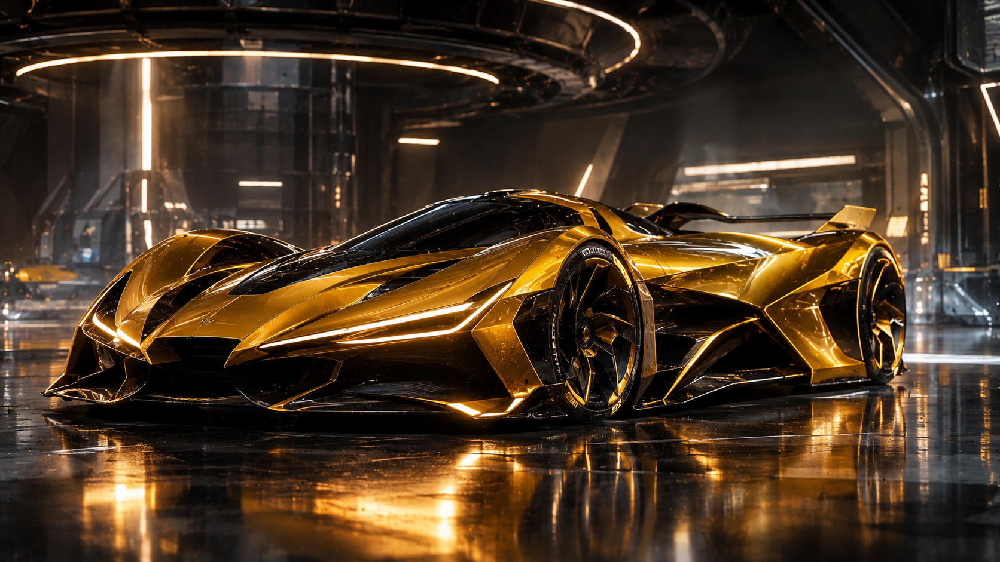
VORTEX e AURIX compartilham uma origem marcada pela destruição. Mas escolheram caminhos diferentes diante de NEXUS.
"O tempo não é apenas o caminho. É aquilo que estamos tentando salvar."
— APEX: RACING BEYOND TIME